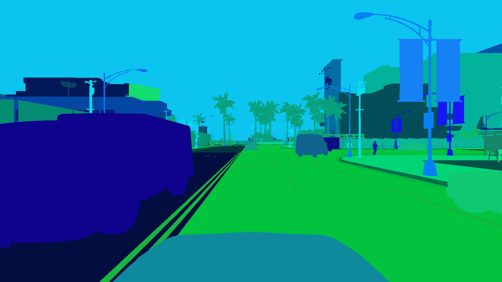
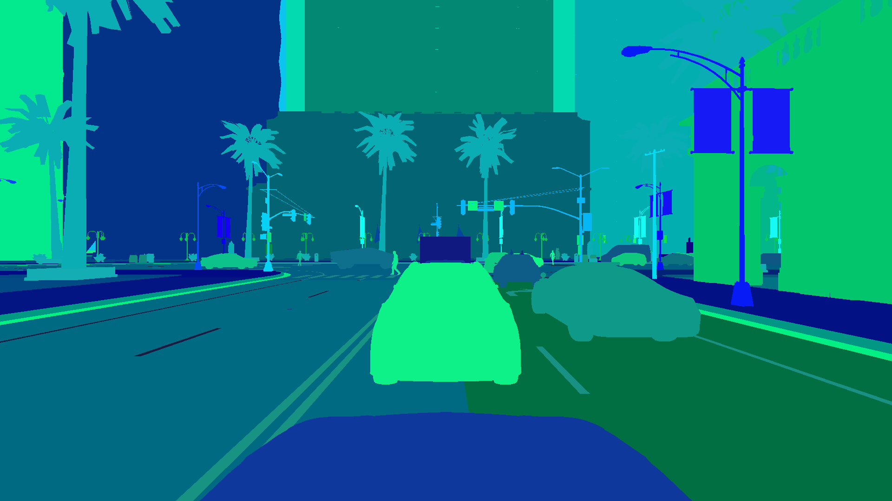
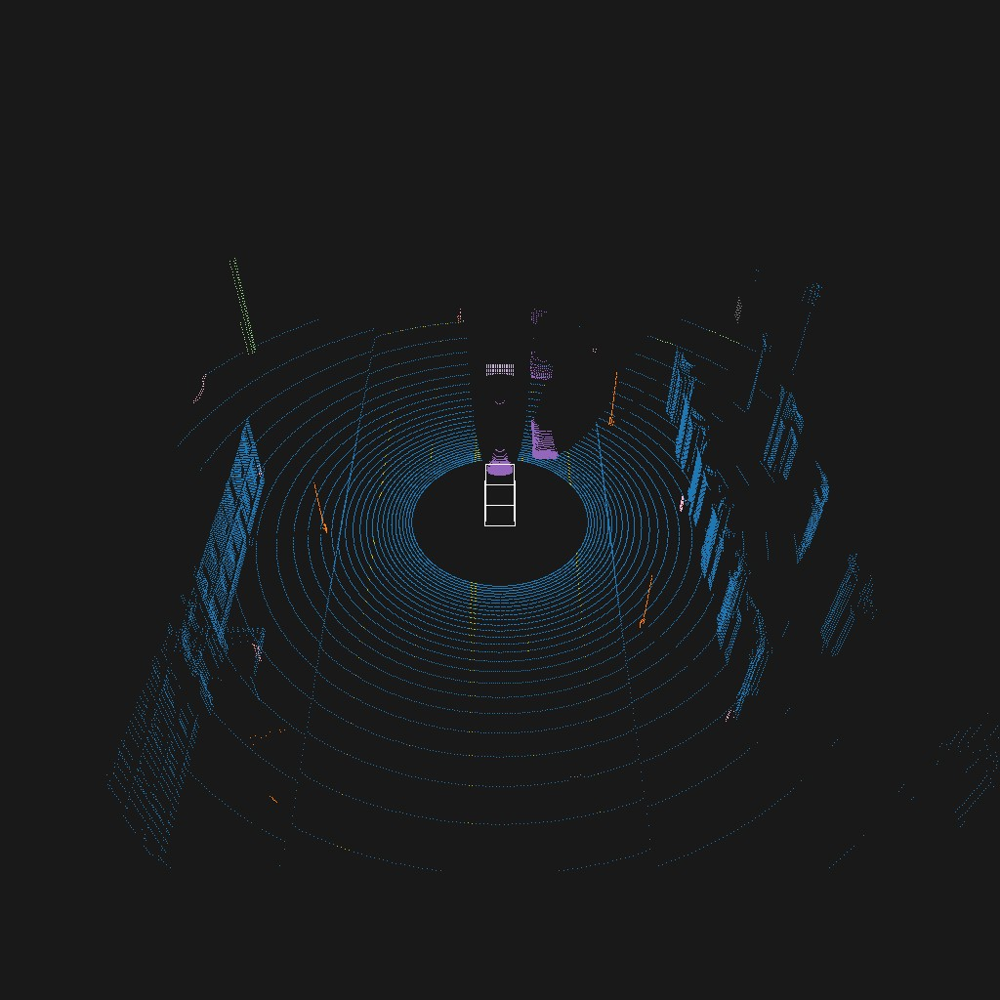

The dataset contains pixel- and instance wise segmentation masks for each object in the scene. Each object
has a unique ID.
Since these annotations where generated in a simulation, the annotations are perfect.
scenario/
rgb-front/
000000.jpg
...
segmentation-front/
000000.png
...
depth-front/
000000.png
...
img = Image.open("segmentation-front/000099.png")
# instance ids are encoded in the G and B channel
id_fields = np.array(img)[:,:,1:3]
instance_ids = np.zeros(shape=(id_fields.shape[0], id_fields.shape[1]), dtype=np.int32)
instance_ids += id_fields[:,:,0]
instance_ids += id_fields[:,:,1].astype(np.int32) << 8
# per-pixel classes are encoded in the R channel
segmentation_mask = np.array(img)[:,:,0]
Camera Image

Instance Segmentation MaskDepth Map
Camera Image

Instance Segmentation MaskDepth Map
Semantic LIDAR Point Clouds
Pixel-Anotated LIDAR Pointclouds for each frame with realistic settings.
scenario/
pointclouds/
000000.bin
labels-000000.bin
...
Both points and labels are serialized numpy arrays:
# x, y, z, and reflectance
points = np.fromfile("pointclouds/000063.bin", dtype=np.dtype("f4")).reshape(-1, 4)
# class_label and instance_id
labels = np.fromfile("pointclouds/labels-000063.bin", dtype=np.uint32).reshape(-1, 2)

LIDAR Example 1LIDAR Example 2
KITTI Annotations
Kitti annotations contain 3D bounding boxes and connect them to the camera.
scenario/
kitti-front/
complete_data/
000000_extended.json
...
label_2/
000000.txt
...
calib/
000000.txt
...
Anomaly Annotations
Sample- and Sensor-Level
For cameras the per-pixel anomaly labels are available in a separate directory.
Labels are written in a 1-channel PNG where 0 means normal and everything else means anomaly.
Sensor-level anomaly labels are given in a CSV with an anomaly column for convenience.
scenario/
anomaly-front/
000000.png
...
sensor.csv
For LiDAR the anomaly labels are similarly available in a separate directory:
scenario/
anomaly-pcl/
000000.bin
...
sensor.csv
The .bin files are serialized numpy vectors with value 0 if normal and anomaly
otherwise.
Observation-Level
In CarlAnomaly, an observation is an anomaly when there is an anomaly in any of the sensors.
For convenience, these are also stored in CSV:
scenario/
anomaly-observation.csv
Scenario-Level
These labels are given by the directory.
Additional Sensors
The dataset additionally contains sensor readings for the following sensors in CSV format:
IMU: Measuring acceleration and orientation of the ego vehicle
GNSS: Measuring position of the vehicle
Weather: Exact weather conditions
scenario/
gnss.csv
imu.csv
weather.csv
You can simply load these as pandas dataframes:
import pandas as pd
weather = pd.read_csv("weather.csv")
Example: IMU
The per-step IMU readings look as follows: